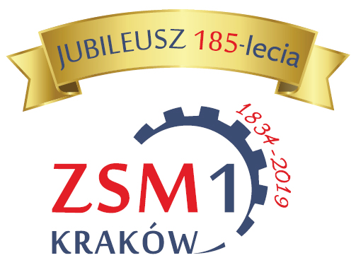

12 maja 2022 r. - Konsultacje z Rodzicami
[ 2022-05-11 ]

12 maja 2022 r. (czwartek) - konsultacje z Rodzicami uczniów klas 1-3 Technikum Mechanicznego nr 15 i Branżowej Szkoły I stopnia nr 14
Wykaz sal na konsultacje - wykaz_sal-na-konsultacje_12_maja_2022.pdf
12 maja 2022 r. (czwartek) - konsultacje z Rodzicami uczniów klas 1-3 Technikum Mechanicznego nr 15 i Branżowej Szkoły I stopnia nr 14
Wykaz sal na konsultacje - wykaz_sal-na-konsultacje_12_maja_2022.pdf
9 maja 2022 r. - ogłoszenie wyników weryfikacji projektów zgłoszonych w ramach Szkolnego Budżetu Obywatelskiego
[ 2022-05-09 ]

Za nami kolejny etap realizacji SzBO. Zespół ds. Szkolnego Budżetu Obywatelskiego, w skład którego wchodzi dyrektor szkoły, przedstawiciele rady pedagogicznej i samorządu uczniowskiego dokonał weryfikacji formalnej oraz merytoryczno-prawnej zgłoszonych przez uczniów Szkoły Branżowej nr 14 i Technikum Mechanicznego nr 15 projektów. Projekty, które otrzymały pozytywną ocenę będą promowane wśród społeczności szkolnej. Następnym etapem będzie głosowanie i wybór projektów, które zostaną zrealizowane na terenie ZSM nr 1. Prosimy o zapoznanie się z projektami oraz udział w głosowaniu i decydowaniu o sprawach szkoły .
Poniżej listy projektów:
a) przyjętych
- w TM nr 15 - Technikum_nr_15___projekty_przyjete.pdf
- w BSIS nr 14 - Szkola_Branzowa_nr_14___projekty_przyjete.pdf
b) odrzuconych
- w TM nr 15 - Technikum_nr_15___projekty_odrzucone.pdf
- w BSIS nr 14 - Szkola_Branzowa_nr_14___projekty_odrzucone.pdf
przez Zespół ds. Szkolnego Budżetu Obywatelskiego..
Opracowanie mgr Elżbieta Gacek i mgr Marek Tuchowski koordynatorzy SzBO w ZSM nr 1
Dzień Europejski - dzień Europy
[ 2022-05-09 ]
Dzień Europejski to dzień Europy - wyjątkowe święto, bo obchodzone w dwóch różnych dniach - 5 i 9 maja.
5 maja Dzień Europy świętują kraje, które są członkami Rady Europy, ale nie są członkami Unii Europejskiej, 9 maja natomiast oficjalnie obchodzi się Dzień Europy w państwach należących do Unii Europejskiej. Obie dzienne daty upamiętniają ważne wydarzenia zmierzające do zapewnienia pokoju i jedności w Europie wyniszczonej drugą wojną światową.
5 maja 1949 r. została ustanowiona Rada Europy, organizacja mająca na celu promocję i ochroną praw człowieka oraz demokracji, 9 maja 1950r. został opublikowany Plan Schumana - propozycja współpracy między Francją, a Niemcami Zachodnimi, dzięki której kolejna wojna nie byłaby możliwa ze względów ekonomicznych.
5 maja jako Dzień Europy jest obchodzony już od 1964r. to "Dzień Tolerancji, Praw Człowieka i Integracji Europejskiej". Dzień wolny od obrad. W siedzibie Rady Europejskiej w Strasburgu co rocznie odbywa się koncert tradycyjnie rozpoczynający się od odegrania hymnu Europy.
Dzień 9 maja - dla odróżnienia go od Dnia Rady Europy - bywa mylnie nazywany Dniem Unii Europejskiej. Mylnie - ponieważ zgodnie z uchwałą Parlamentu Europejskiego dzień ten został nazwany Dniem Europy i pod tą nazwą figuruje we wszystkich oficjalnych dokumentach i materiałach Unii Europejskiej.
Dzień Europy to dzień pokoju i jedności. Pamiętajmy o tym, nie tylko w majowe dni.
Opracowała mgr Magdalena Świsterska, nauczyciel języka angielskiego w ZSM nr 1
Rekrutacja na staże wakacyjne 2022
[ 2022-05-06 ]
W ramach projektu "Centrum Kompetencji Zawodowych - 2 edycja w branży mechanicznej w Gminie Miejskiej Kraków" ogłaszamy rekrutację uczniów na staż wakacyjny w lipcu lub sierpniu 2022 r.
Zainteresowanych uczniów prosimy o zapoznanie się z regulaminem uczestnictwa w projekcie:
- Regulamin - Regulamin_udzielania_stypendiow_stazowych.pdf
oraz złożenie:
- Deklaracja dla przedsiębiorcy - Deklaracja_dla_przedsiebiorcy.pdf
- załącznik nr 2 - Zal._2_Formularz_zgloszeniowy.pdf
- załącznik nr 4 - Zal._4_Deklaracja_uczestnictwa_w_projekcie.pdf
- załącznika nr 5 - Zal._5_RODO_Oswiadczenie-uczestnika_dot._przetwarzania_danych_osobowych.pdf
- załącznik nr 6 - Zal._6_(od_13.08.2018)_Zak_dan_os_pow_do_przet.pdf
- załącznik nr 7 - Zal._7_oswiadczenie_o_braku_udzialu.pdf
Staż trwa 4 tygodnie w okresie wakacji od 1 lipca do 1 sierpnia 2022 r. lub od 1 sierpnia do 31 sierpnia 2022 r. (150 godz. realizowanych przez 22 dni robocze, po max. 7 godz. dziennie, bez sobót i niedziel) u pracodawcy. Przedsiębiorcą może być firma o profilu działalności zgodnym z zawodem kształcenia.
Po odbyciu stażu uczeń otrzymuje wypłatę tzw. stypendium stażowe w kwocie 2300 zł netto/brutto.
Zainteresowani uczniowie składają wypełnione, podpisane "BEZ DAT" dokumenty wraz z deklaracją dla przedsiębiorcy spakowane w kopertę lub koszulkę biurową w terminie od 9 maja 2022 r. do 20 maja 2022 r. do brązowej skrzynki znajdującej się przy pokoju nauczycielskim.
W stażu mogą brać udział uczniowie:
- którzy nie brali udziału w stażu roku 2021,
- na 30 czerwca 2022 r. mają ukończone minimum 16 lat,
- którzy mają średnią ocen z I semestru i frekwencję z I semestru potwierdzoną przez wychowawcę na zał. 2.
Pozostałą dokumentację projektową uczniowie będą składać po ogłoszeniu wyników rekrutacji, przed rozpoczęciem kursu.